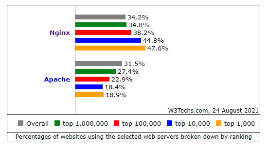
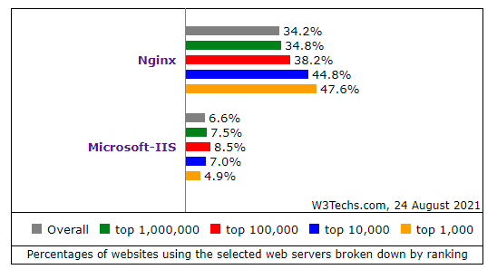

web服务器中市占率最高，最通用的就是apache、iis和nginx。从基本功能上看，其都能自己处理来自客户端的html资源请求。apache特点是技术成熟，扩展模块多，动态请求支持好，稳定性好，但是配置比较麻烦，对高并发请求处理能力差；nginx在Linux和Windows都可以运行，和系统以及扩展模块耦合性不强，nginx优点在于其对静态资源的处理速度比apache快，可以做负载均衡和反向代理，配置比apache简单，是一种高性能web服务器，缺点是动态资源的处理速度不如apache；iis相对而言和前两者的竞争着眼点不同，iis作为Windows系统才能运行的付费服务器软件，有着简单易上手的优点，成熟的商业技术支持，其前期投入较大，后期维护成本较低，但是在安全性上由于Windows与类unix系统天生定位不同，许多对安全性要求高的企业不会选择iis。以最新的w3tech的网站统计数据：


可以看出，在纳入统计的网站中（即大多比较常见的面向大众的网站，小型的访问量少的网站统计较少），iis的市场占有率比较低，在超大型网站尤为如此，随着网站规模变大，网站受攻击的可能性变大，且付费服务与培养维持自己的运维团队的性价比会进一步降低；此外，随着网站规模变大，nginx的市占率越发变高，这主要是其在高并发和负载均衡等方面的优势，以及方便针对业务进行改造和模块开发带来的结果。整体看来，nginx在主流大型网站中的使用呈现上升的姿态，这与其固有的优势以及其弱点的逐渐克服有很大关系，而apache和iis也有自己固有的应用场景，而且其长期积累的用户生态和nginx较新技术的转移成本，都是三者长期竞争而不会迅速取代对方的关键。
在centos中，可以直接用rpm包管理软件安装nginx的同时解决安装依赖问题，若要编译安装，则必须提前安装好其依赖软件如GCC编译器（一般centos以及安装有）、PCRE库、zlib库和openssl开发库等。我选择最简单的yum安装（也可以用dnf）：
yum -y install nginx
过程中按照提示确认安装相关依赖库和软件即可。
安装完成后要启动nginx服务并将其设置为开机自启动服务。
systemctl start nginx
systemctl enable nginx
查看nginx的配置文件，可以知道其代理项目的路径以及代理端口，以代理路径配置
root :/usr/share/nginx/html
为例，若代理端口为8080，此时在本机浏览器输入127.0.0.1：8080就会访问到html下的index.html文件.
若是要访问php文件，需要保证安装并启动了php-fpm，并设置为自启动服务。一般安装时其会自动在/etc/nginx/conf.d目录下建立自己的配置文件，nginx载入相关配置后会把php文件转发给php解析，并将结果返回浏览器。
可以查看nginx手册，了解相关基础操作和常用文件位置，比较重要的就是：
nginx -s reload 命令，在每次修改nginx配置文件后，重载配置文件使其生效，不用重启nginx
/etc/nginx/nginx.conf 为主要配置文件，一般查看nginx的总体配置和主要代理设置都通过这个文件查看和设置
/usr/share/nginx/html 默认的对外提供静态资源的目录，在nginx.conf中可以找到路径位置，默认情况下，安装的nginx软件的拥有者和所属组都是nginx，对于一些文件，nginx用户可能没有读取权限，比如/home/目录下的用户主目录，所以一般需要代理的内容和项目，都放在html目录下为好，若要代理其他目录下的项目，要先确定nginx对其路径上所有目录都有访问权限。
/var/log/nginx 为默认的nginx日志存放目录，其中包括access.log日志和error.log日志，在nginx设置代理时，若配置文件有语法错误，则一般重载配置文件时会将错误提示输出到标准输出；若是必须在处理请求时才能在执行过程中发现的错误，可以结合客户端页面错误代码提示，以及两个日志文件分析发生访问错误的原因。
/etc/nginx/conf.d目录下是各种server配置文件，会被nginx.conf读取并载入，在用nginx代理多个项目时，将各个项目的配置单独写成文件存放此处方便管理。
响应超时的问题说明http请求不能达到指定ip和端口，可能是ip错误，没有启用服务器，没有开放对应的端口；在服务器用systemctl status firewalld和systemctl status nginx 查看防火墙有没有打开，以及nginx有没有运行。
再用firewall-cmd --list-ports 查看对应的端口有没有开放，确定开放后用firewall-cmd --reload重载防火墙配置
对于云服务器，除了登陆主机的操作，还必须再服务商的商品控制台开放防火墙对应端口才行
对应端口开放，但是没有被web服务器监听，此时应该查看nginx配置是否监听了对应端口
1、状态码为404 Not Found：说明服务器没有对应的资源文件，此时应排查请求地址是否错误，url的文件名是否错误，对应查找服务器是否有对应文件
2、状态码为403 Forbidden:说明访问的资源可能存在，但是没有访问权限或者缺少对应目录的索引文件，此处的权限指的是作为服务器端处理请求的nginx服务器的用户nginx,没有相关资源的访问权限，此时解决办法一方面是给nginx或者任何普通用户要访问的文件资源的读权限，这个权限不仅是值文件本身的读权限，二是到达文件的每一层目录都必须有读权限，若更改后还是存在权限问题，则可能与SElinux的应用权限锁有关。
3、若错误提示状态码是5**，则是资源文件在交给后端服务器应用处理时产生错误，应检查解析器，脚本等是否错误；状态码（浏览器开发人员模式的网络查看）为200为请求成功，3**为实际访问内容经过服务器重定向得到。
注：既然收到了来自服务器的返回文件及状态码，那么存在的错误都可以在nginx日志中找到，层层排查，即可找到最终的问题来源。日志中最重要的就是错误信息，从acceess.log对应的记录，可以查明失败访问的具体信息，包括时间，客户端信息，状态码等；对应时间查看error.log可以找到更具体的错误记录，主要就是看failed 相关的描述信息。